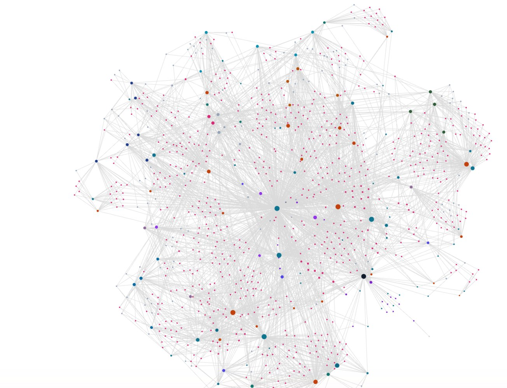
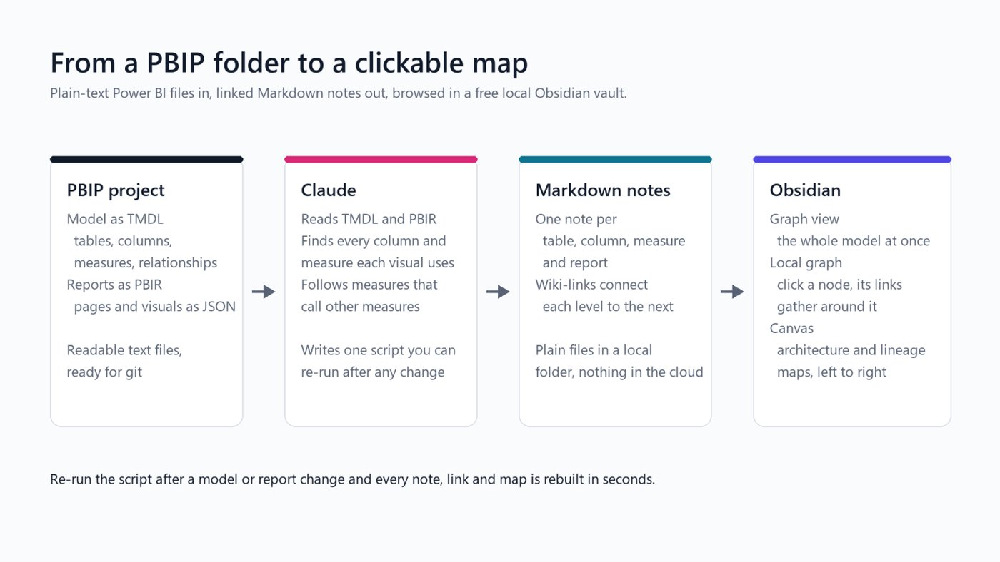
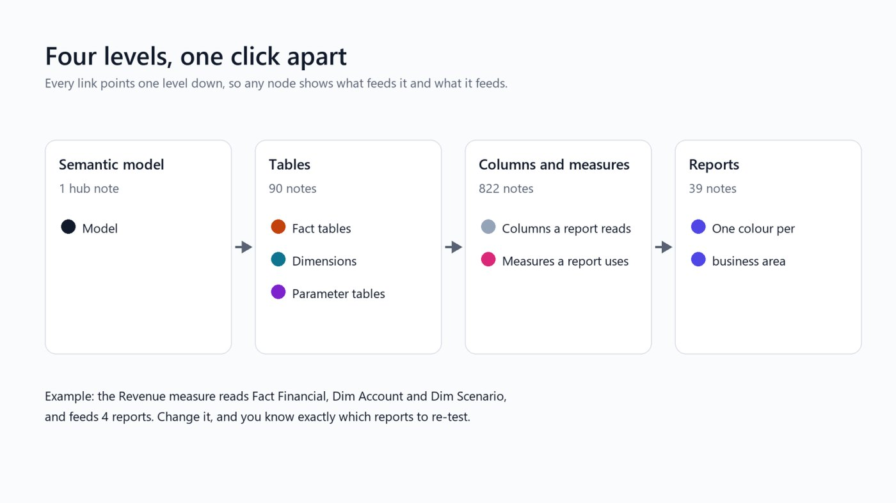
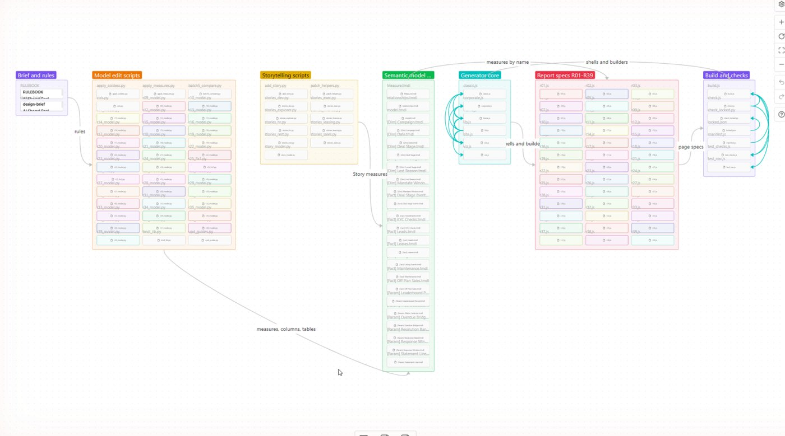
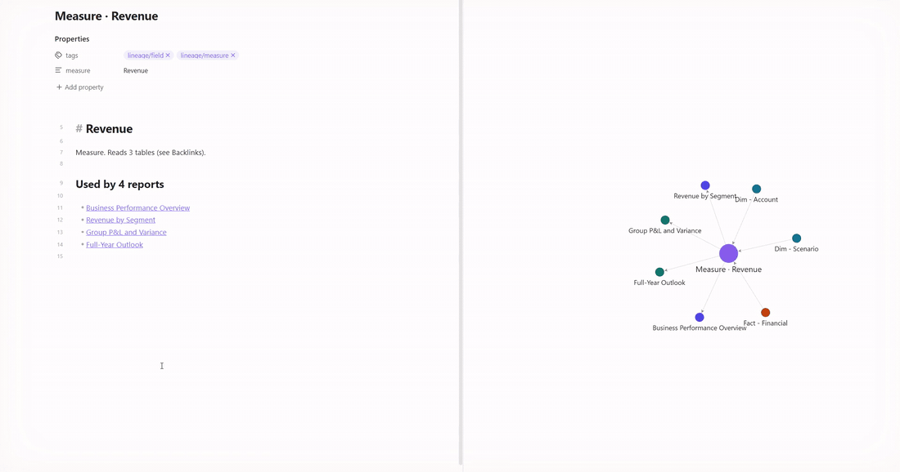
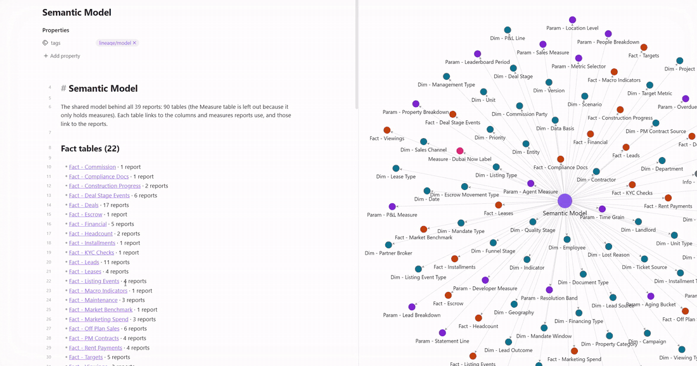
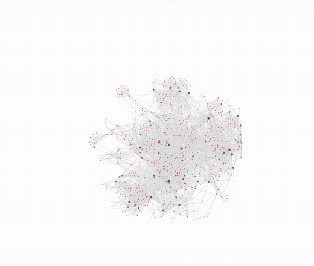
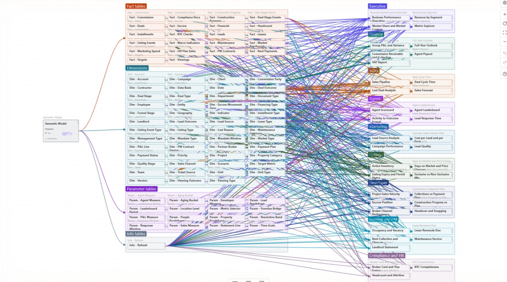
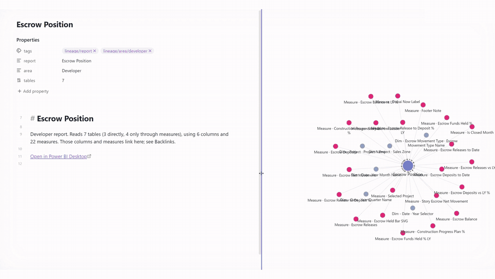

A Ten-Minute Measure Change, a Day of Checking: See Every Report It Touches with Obsidian and Power BI
Logeshkumar Sivakumar · October 28, 2026 · 8 min read

"Can you tweak how Escrow Balance is calculated? Should be quick."
The DAX edit takes ten minutes. The rest of the day goes on everything around it. Which measures call this one? Which tables does it read? Which reports show it, and on which pages? Who opens those reports first thing tomorrow?
Writing the change is the easy part. Proving it breaks nothing is the real work, and in a large Power BI project nobody can answer those questions from memory. Power BI Desktop shows you one report at a time. Nothing shows the team the whole chain at once.
So I built that view for a 39-report project, using Obsidian and Claude . It runs on a local folder and costs nothing.
What is Obsidian?
Obsidian is a note-taking app built on plain Markdown files. A vault is just a folder on your computer. Notes link to each other with [[wiki-links]], and Obsidian turns those links into an interactive graph you can click, drag and filter. It also has Canvas, a whiteboard where each card can be a real file.
Three things make it a good fit for Power BI work:
- It's local. The vault never leaves your machine unless you choose to sync it.
- It's free, including for work use. Obsidian made its commercial licence optional in 2025.
- It's plain text. Every note is a Markdown file, so it can sit in git next to your PBIP project.

Why PBIP makes this possible
When you save a report as a Power BI Project (PBIP), the semantic model is written as TMDL and each report as PBIR. Both are readable text: every table, column, measure, page and visual is a file you can open.
That means a script can read the whole project and work out who uses what. Which columns a visual read, which measures a page shows, and which tables each measure depends on, following measures that call other measures.
What I built

Two maps, both generated from the PBIP folder by a script Claude wrote for me:
1. A lineage map in four levels. Semantic model → tables → columns and measures → reports. About 950 notes, each linked one level down.

2. An architecture map of the project itself: the design rules, the model scripts, the report generator and the 39 report specs, laid out left to right as an Obsidian canvas.

How it works in practice
Open any measure and its local graph shows exactly two things: the tables it reads and the reports that use it.

Click your way down from the model to a single report. Each click re-centres the graph on the node you chose and pulls its neighbours around it.

Zoom out and the whole project is one picture, coloured by level: tables by type, measures in pink, columns in grey, reports by business area. Even at that scale you can pick out a single change.

The canvas version puts the same lineage into strict columns, which works well on a big screen in a design review.

From the graph to the real report
The map is only useful if it leads back to the report people actually use. Every report note ends with an "Open in Power BI Desktop" link, so the step from "this measure feeds Escrow Position" to looking at Escrow Position takes one click.

That's the check a reviewer needs before approving a change: see the dependency, open the report, look at the visual that will move.
How to build it
- Save the project as PBIP. In Power BI Desktop, use File → Save as → Power BI Project. Keep the model in TMDL format.
- Create a local vault. In Obsidian, choose "Open folder as vault" and point it at an empty folder.
- Link the project into the vault. I used Windows folder junctions, so notes can link to the real TMDL and script files without copying them.
- Ask Claude to generate the notes. My prompt was close to this: "Create one Markdown note per table, column, measure and report. Read the TMDL for tables and measures, and the PBIR visuals for what each report uses. Link each note to the level below it, tag each note with its level, and write it as a script I can re-run."
- Colour and filter the graph. Colour groups by tag (tables, columns, measures, reports by area) and a filter so the graph shows only the lineage folder.
- Dock the local graph beside your notes. Whatever you click becomes the centre, with its direct links around it.
- Re-run after every change. The script rebuilds every note and link in a few seconds.
For the architecture map I asked for one note per script and a JSON Canvas file arranged left to right by data flow. Claude checked the canvas format against the published JSON Canvas spec before writing it.
How it helps a team
- Impact analysis before a change. Open the measure and see every report to re-test, before anyone edits DAX.
- Faster onboarding. A new developer can explore the model visually instead of reading 900 measures in a list.
- Better code reviews. When a pull request touches a measure or column, reviewers can see the blast radius in one click.
- Cleanup. The map showed 12 tables that no report uses, which are candidates to remove.
- Living documentation. The notes come from the files themselves, so they never drift from the project.
Limits worth knowing
It's a snapshot, not a live connection, so it reflects the PBIP files as they were when you last ran the script. With hundreds of measures the full graph is dense, which is why the local graph is the main way to browse. And it maps what the files reference: a dynamic measure that switches by slicer selection is linked to everything it can return.
Where this fits
This pays off once a model is shared by more than one developer, or more than a handful of reports depend on it. Think of a regional team in Singapore maintaining one finance model for several APAC markets: before changing a margin measure, the developer can show the reviewer exactly which country reports it touches. The vault holds only names and links (no data rows), so it raises no PDPA concerns about the underlying data.
There are browser-based lineage explorers for PBIP projects, and they're useful. I couldn't find anyone mapping a Power BI project into Obsidian, where the map sits next to the team's own notes, decisions and design rules, and works offline for free.
The edit will always be the quick part. The map makes the checking quick too.
Captions are auto generated
Play
Obsidian Workflow
Previous in this Series: An Al-Assisted Workflow for Real Business Reporting: Beyond Dashboards
A Note on AI-Assisted Workflows
Every file this pipeline produces goes through manual review before it is used in a demo. The dataset, bim structure, DAX logic, relationships, measure descriptions, page layout, visual types and report interaction options are validated against the actual dataset and use case before deployment.
AI compresses the time between starting and having something to review - it does not replace the review itself. Always validate before sharing. The output is a strong starting point, not a finished product.
For teams exploring industry-specific analytics at scale, there's plenty more to discuss. 💬
Previous in this Series: An Al-Assisted Workflow for Real Business Reporting: Beyond Dashboards
References
- Previous in this Series: An Al-Assisted Workflow for Real Business Reporting: Beyond Dashboards
- Power BI Desktop projects (PBIP): learn.microsoft.com/en-us/power-bi/developer/projects/projects-overview
- Tabular Model Definition Language (TMDL): learn.microsoft.com/en-us/analysis-services/tmdl/tmdl-overview
- Obsidian is free for work: obsidian.md/blog/free-for-work
#PowerBI #PBIP #TMDL #Obsidian #DataModeling #SemanticModel #BusinessIntelligence #DAX #ClaudeAI #KnowledgeGraph